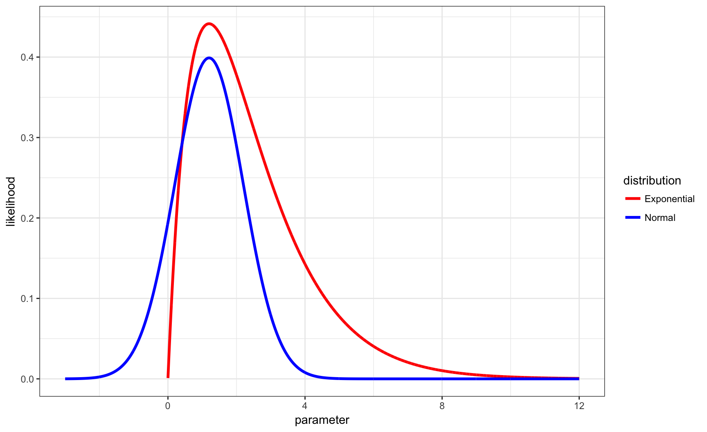

QCB 508 – Week 6
John D. Storey
Spring 2017

Likelihood Function
Same MLE, Different \(L(\theta | \boldsymbol{x})\)

Weighted Likelihood Estimate
Instead of employing estimator \(\hat{\theta}_{{\rm MLE}} = \operatorname{argmax}_\theta L(\theta ; \boldsymbol{x})\), consider instead an arbitrary weight function, \(g(\theta)\). We could take a weighted average of the likelihood function, assuming all of the integrals below exist.
\[ \tilde{\theta} = \frac{\int \theta g(\theta) L(\theta ; \boldsymbol{x}) d\theta}{\int g(\theta) L(\theta ; \boldsymbol{x}) d\theta} \]
Conditional Expected Value
If we set
\[ h(\theta | \boldsymbol{x}) = \frac{g(\theta) L(\theta ; \boldsymbol{x})}{\int g(\theta^*) L(\theta^* ; \boldsymbol{x}) d\theta^*} \]
then \(h(\theta | \boldsymbol{x})\) is a probability density function and
\[ \tilde{\theta} = {\operatorname{E}}_{h(\theta | \boldsymbol{x})}[\theta]. \]
Standard Errror
Consider the model, \(X_1, X_2, \ldots, X_n {\; \stackrel{\text{iid}}{\sim}\;}F_{\theta}\).
Since \(\tilde{\theta} = {\operatorname{E}}_{h(\theta | \boldsymbol{x})}[\theta]\) is a function of the data \(\boldsymbol{x}\), it follows that in most circumstances it should be possible to obtain an approximation to its standard error, \(\sqrt{{\operatorname{Var}}(\tilde{\theta})}\) and an estimate of the standard error.
This allows for frequentist inference of estimates based on a weighted integral of the likelihood function.
Bayesian Inference
Frequentist Probability
The inference framework we have covered so far uses a frequentist intepretation of probability.
We made statements such as, “If we repeat this study over and over, the long run frequency is such that…”
Bayesian Probability
Traditional Bayesian inference is based on a different interpretation of probability, that probability is a measure of subjective belief.
We will call this “subjective Bayesian statistics.”
The Framework
A prior probability distribution is introduced for an unknown parameter, which is a probability distribution on the unknown parameter that captures one’s subjective belief about its possible values.
The posterior probability distributuon of the parameter is then calculated using Bayes theorem once data are observed. Analogs of confidence intervals and hypothesis tests can then be obtained through the posterior distribution.
An Example
Prior: \(P \sim \mbox{Uniform}(0,1)\)
Data generating distribution: \(X|P=p \sim \mbox{Binomial}(n,p)\)
Posterior pdf (via Bayes Theorem):
\[\begin{align*} f(p | X=x) & = \frac{\Pr(X=x | P=p) f(p)}{\Pr(X=x)} \\ & = \frac{\Pr(X=x | P=p) f(p)}{\int \Pr(X=x | P=p^*) f(p^*) dp^*} \end{align*}\]Calculations
In the previous example, it is possible to analytically calculate the posterior distribution. (In the example, it is a Beta distribution with parameters that involve \(x\).) However, this is often impossible.
Bayesian inference often involves complicated and intensive calculations to numerically approximate the posterior probability distribution.
In Practice
Although the Bayesian inference framework has its roots in the subjective view of probability, in modern times this philosophical aspect is often ignored or unimportant.
When subjectivism is ignored, is this really Bayesian statistics, or is it frequentist statistics that includes a probability model on the unknown parameter(s) that employes Bayes Theorem?
In Practice (cont’d)
Bayesian inference is often used because it provides a flexible and sometimes superior model for real world problems. But the interpretation and evaluation are often tacitly frequentist.
There are very few pure subjective Bayesians working in the natural sciences or in technology industries.
Goal
Suppose we model \((X_1, X_2, \ldots, X_n) | \theta \ {\; \stackrel{\text{iid}}{\sim}\;}\ F_{\theta}\) with prior distribution \(\theta \sim F_{\tau}\) where it should be noted that \(\theta\) also depends on (possibly unknown or subjective) parameter(s) \(\tau\).
The ultimate goal is to determine the posterior distribution of \(\theta | \boldsymbol{X}\) through Bayes theorem:
\[ f(\theta | \boldsymbol{X}) = \frac{f(\boldsymbol{X} | \theta) f(\theta)}{f(\boldsymbol{X})} = \frac{f(\boldsymbol{X} | \theta) f(\theta)}{\int f(\boldsymbol{X} | \theta^*) f(\theta^*) d\theta^*}. \]
If there is a true fixed value of \(\theta\), then a well-behaved model should be so that \(f(\theta | \boldsymbol{X})\) concentrates around this fixed value as \(n \rightarrow \infty\).
Advantages
- Statements on measures of uncertainty and inference are easier to make
- Often superior numerical stability to the estimates
- Data across studies or multiple samples easier to combine (e.g., how to combine frequentist p-values?)
- High-dimensional inference works especially well in a Bayesian framework
Computation
Bayesian inference can be particularly computationally intensive. The challenge is usually in calculating the denominator of the right hand side of Bayes thereom, \(f(\boldsymbol{X})\):
\[ f(\theta | \boldsymbol{X}) = \frac{f(\boldsymbol{X} | \theta) f(\theta)}{f(\boldsymbol{X})} \]
Markov chain Monte Carlo methods and variational inference methods are particularly popular for dealing with the numerical challenges of obtain good estimates of the posterior distribution.
Estimation
Assumptions
We will assume that \((X_1, X_2, \ldots, X_n) | \theta {\; \stackrel{\text{iid}}{\sim}\;}F_{\theta}\) with prior distribution \(\theta \sim F_{\tau}\) unless stated otherwise. Shorthand for the former is \(\boldsymbol{X} | \theta {\; \stackrel{\text{iid}}{\sim}\;}F_{\theta}\).
We will write the pdf or pmf of \(X\) as \(f(x | \theta)\) as opposed to \(f(x ; \theta)\) because in the Bayesian framework this actually represents conditional probability.
We will write the pdf or pmf of \(\theta\) as \(f(\theta)\) or \(f(\theta ; \tau)\) or \(f(\theta | \tau)\). Always remember that prior distributions require paramater values, even if we don’t explicitly write them.
Posterior Distribution
The posterior distribution of \(\theta | \boldsymbol{X}\) is obtained through Bayes theorem:
\[\begin{align*} f(\theta | \boldsymbol{x}) & = \frac{f(\boldsymbol{x} | \theta) f(\theta)}{f(\boldsymbol{x})} = \frac{f(\boldsymbol{x} | \theta) f(\theta)}{\int f(\boldsymbol{x} | \theta^*) f(\theta^*) d\theta^*} \\ & \propto L(\theta ; \boldsymbol{x}) f(\theta) \end{align*}\]Posterior Expectation
A very common point estimate of \(\theta\) in Bayesian inference is the posterior expected value:
\[\begin{align*} \operatorname{E}[\theta | \boldsymbol{x}] & = \int \theta f(\theta | \boldsymbol{x}) d\theta \\ & = \frac{\int \theta L(\theta ; \boldsymbol{x}) f(\theta) d\theta}{\int L(\theta ; \boldsymbol{x}) f(\theta) d\theta} \end{align*}\]Posterior Interval
The Bayesian analog of the frequentist confidence interval is the \(1-\alpha\) posterior interval, where \(C_{\ell}\) and \(C_{u}\) are determined so that:
\[ 1-\alpha = \Pr(C_\ell \leq \theta \leq C_u | \boldsymbol{x}) \]
Maximum A Posteriori Probability
The maximum a posteriori probability (MAP) is the value (or values) of \(\theta\) that maximize the posterior pdf or pmf:
\[\begin{align*} \hat{\theta}_{\text{MAP}} & = \operatorname{argmax}_\theta \Pr(\theta | \boldsymbol{x}) \\ & = \operatorname{argmax}_\theta L(\theta ; \boldsymbol{x}) f(\theta) \end{align*}\]This is a frequentist-esque use of the Bayesian framework.
Loss Functions
Let \(\mathcal{L}\left(\theta, \tilde{\theta}\right)\) be a loss function for a given estimator \(\tilde{\theta}\). Examples are
\[ \mathcal{L}\left(\theta, \tilde{\theta}\right) = \left(\theta - \tilde{\theta}\right)^2 \mbox{ or } \mathcal{L}\left(\theta, \tilde{\theta}\right) = \left|\theta - \tilde{\theta}\right|. \]
Note that, where the expected value is over \(f(\boldsymbol{x}; \theta)\):
\[\begin{align*} \operatorname{E}\left[\left(\theta - \tilde{\theta}\right)^2\right] & = \left(\operatorname{E}\left[\tilde{\theta}\right] - \theta\right)^2 + \operatorname{Var}\left(\tilde{\theta}\right) \\ & = \mbox{bias}^2 + \mbox{variance} \end{align*}\]Bayes Risk
The Bayes risk, \(R\left(\theta, \tilde{\theta}\right)\), is the expected loss with respect to the posterior:
\[ {\operatorname{E}}\left[ \left. \mathcal{L}\left(\theta, \tilde{\theta}\right) \right| \boldsymbol{x} \right] = \int \mathcal{L}\left(\theta, \tilde{\theta}\right) f(\theta | \boldsymbol{x}) d\theta \]
Bayes Estimators
The Bayes estimator minimizes the Bayes risk.
The posterior expectation \({\operatorname{E}}\left[ \left. \theta \right| \boldsymbol{x} \right]\) minimizes the Bayes risk of \(\mathcal{L}\left(\theta, \tilde{\theta}\right) = \left(\theta - \tilde{\theta}\right)^2\).
The median of \(f(\theta | \boldsymbol{x})\), calculated by \(F^{-1}_{\theta | \boldsymbol{x}}(1/2)\), minimizes the Bayes risk of \(\mathcal{L}\left(\theta, \tilde{\theta}\right) = \left|\theta - \tilde{\theta}\right|\).
Classification
Assumptions
Let \((X_1, X_2, \ldots, X_n) | \theta {\; \stackrel{\text{iid}}{\sim}\;}F_\theta\) where \(\theta \in \Theta\) and \(\theta \sim F_{\tau}\). Let \(\Theta_0, \Theta_1 \subseteq \Theta\) so that \(\Theta_0 \cap \Theta_1 = \varnothing\) and \(\Theta_0 \cup \Theta_1 = \Theta\).
Given observed data \(\boldsymbol{x}\), we wish to classify whether \(\theta \in \Theta_0\) or \(\theta \in \Theta_1\).
This is the Bayesian analog of hypothesis testing.
Prior Probability on H
Let \(H\) be a rv such that \(H=0\) when \(\theta \in \Theta_0\) and \(H=1\) when \(\theta \in \Theta_1\).
From the prior distribution on \(\theta\), we can calculate
\[ \Pr(H=0) = \int_{\theta \in \Theta_0} f(\theta) d\theta \]
and \(\Pr(H=1) = 1-\Pr(H=0)\).
Posterior Probability
Using Bayes theorem, we can also calculate
\[\begin{align*} \Pr(H=0 | \boldsymbol{x}) & = \frac{f(\boldsymbol{x} | H=0) \Pr(H=0)}{f(\boldsymbol{x})} \\ & = \frac{\int_{\theta \in \Theta_0} f(\boldsymbol{x} | \theta) f(\theta) d\theta}{\int_{\theta \in \Theta} f(\boldsymbol{x} | \theta) f(\theta) d\theta} \end{align*}\]where note that \(\Pr(H=1 | \boldsymbol{x}) = 1-\Pr(H=0 | \boldsymbol{x})\).
Loss Function
Let \(\mathcal{L}\left(\tilde{H}, H\right)\) be such that
\[\begin{align*} \mathcal{L}\left(\tilde{H}=1, H=0 \right) & = c_{I}\\ \mathcal{L}\left(\tilde{H}=0, H=1 \right) & = c_{II} \end{align*}\]for some \(c_{I}, c_{II} > 0\).
Bayes Risk
The Bayes risk, \(R\left(\tilde{H}, H\right)\), is
\[ {\operatorname{E}}\left[ \left. \mathcal{L}\left(\theta, \tilde{\theta}\right) \right| \boldsymbol{x} \right] = c_{I} \Pr(\tilde{H}=1 | H=0) + c_{II} \Pr(\tilde{H}=0 | H=1). \]
Notice how this balances what frequentists call Type I error and Type II error.
Bayes Rule
The estimate \(\tilde{H}\) that minimizes \(R\left(\tilde{H}, H\right)\) is
\[\tilde{H}=1 \mbox{ when } \Pr(H=1 | \boldsymbol{x}) \geq \frac{c_{I}}{c_{I} + c_{II}}\]
and \(\tilde{H}=0\) otherwise.
Priors
Conjugate Priors
A conjugate prior is a prior distribution for a data generating distribution so that the posterior distribution is of the same type as the prior.
Conjugate priors are useful for obtaining stratightforward calculations of the posterior.
There is a systematic method for calculating conjugate priors for exponential family distributions.
Example: Beta-Bernoulli
Suppose \(\boldsymbol{X} | \mu {\; \stackrel{\text{iid}}{\sim}\;}\mbox{Bernoulli}(p)\) and suppose that \(p \sim \mbox{Beta}(\alpha, \beta)\).
\[\begin{align*} f(p | \boldsymbol{x}) & \propto L(p ; \boldsymbol{x}) f(p) \\ & = p^{\sum x_i} (1-p)^{\sum (1-x_i)} p^{\alpha - 1} (1-p)^{\beta-1} \\ & = p^{\alpha - 1 + \sum x_i} (1-p)^{\beta - 1 + \sum (1-x_i)} \\ & \propto \mbox{Beta}(\alpha + \sum x_i, \beta + \sum (1-x_i)) \end{align*}\]Therefore, \[ {\operatorname{E}}[p | \boldsymbol{x}] = \frac{\alpha + \sum x_i}{\alpha + \beta + n}. \]
Example: Normal-Normal
Suppose \(\boldsymbol{X} | \mu {\; \stackrel{\text{iid}}{\sim}\;}\mbox{Normal}(\mu, \sigma^2)\), where \(\sigma^2\) is known, and suppose that \(\mu \sim \mbox{Normal}(a, b^2)\).
Then it can be shown that \(\mu | \boldsymbol{x} \sim \mbox{Normal}({\operatorname{E}}[\mu | \boldsymbol{x}], {\operatorname{Var}}(\mu | \boldsymbol{x}))\) where
\[ {\operatorname{E}}[\mu | \boldsymbol{x}] = \frac{b^2}{\frac{\sigma^2}{n} + b^2} \overline{x} + \frac{\frac{\sigma^2}{n}}{\frac{\sigma^2}{n} + b^2} a \]
\[ {\operatorname{Var}}(\mu | \boldsymbol{x}) = \frac{b^2 \frac{\sigma^2}{n}}{\frac{\sigma^2}{n} + b^2} \]
Example: Dirichlet-Multinomial
This is a problem on Homework 3!
Example: Gamma-Poisson
This is a problem on Homework 3!
Jeffreys Prior
If we do inference based on prior \(\theta \sim F_{\tau}\) to obtain \(f(\theta | \boldsymbol{x}) \propto L(\theta; \boldsymbol{x}) f(\theta)\), it follows that this inference may not be invariant to transformations of \(\theta\), such as \(\eta = g(\theta)\).
If we utilize a Jeffreys prior, which means it is such that
\[f(\theta) \propto \sqrt{I(\theta)}\]
then the prior will be invariant to transformations of \(\theta\). We would want to show that \(f(\theta) \propto \sqrt{I(\theta)}\) implies \(f(\eta) \propto \sqrt{I(\eta)}\).
Examples: Jeffreys Priors
Normal\((\mu, \sigma^2)\), \(\sigma^2\) known: \(f(\mu) \propto 1\)
Normal\((\mu, \sigma^2)\), \(\mu\) known: \(f(\sigma) \propto \frac{1}{\sigma}\)
Poisson\((\lambda)\): \(f(\lambda) \propto \frac{1}{\sqrt{\lambda}}\)
Bernoulli\((p)\): \(f(p) \propto \frac{1}{\sqrt{p(1-p)}}\)
Improper Prior
An improper prior is a prior such that \(\int f(\theta) d\theta = \infty\). Nevertheless, sometimes it still may be the case that \(f(\theta | \boldsymbol{x}) \propto L(\theta; \boldsymbol{x}) f(\theta)\) yields a probability distribution.
Take for example the case where \(\boldsymbol{X} | \mu {\; \stackrel{\text{iid}}{\sim}\;}\mbox{Normal}(\mu, \sigma^2)\), where \(\sigma^2\) is known, and suppose that \(f(\mu) \propto 1\). Then \(\int f(\theta) d\theta = \infty\), but
\[ f(\theta | \boldsymbol{x}) \propto L(\theta; \boldsymbol{x}) f(\theta) \sim \mbox{Normal}\left(\overline{x}, \sigma^2/n\right)\]
which is a proper probability distribution.
Theory
de Finetti’s Theorem
Let \(X_1, X_2, \ldots\) be an infinite exchangeable sequence of Bernoulli rv’s. There exists a random variable \(P \in [0, 1]\) such that:
- \(X_1|P, X_2|P, \ldots\) are conditionally independent
- \(X_1, X_2, \ldots | P=p \stackrel{{\rm iid}}{\sim} \mbox{Bernoulli}(p)\)
This theorem is often used to justify the assumption of exchangeability, which is weaker than iid, with a prior distribution on the parameter(s).
Admissibility
An estimator \(\tilde{\theta}\) is admissible with respect to risk function \(R(\cdot, \theta)\) if there is exists no other estimator \(\hat{\theta}\) such that \(R(\hat{\theta}, \theta) < R(\tilde{\theta}, \theta)\) for all \(\theta \in \Theta\).
There’s a theoretical result that says all admissible estimators are Bayes estimates.
Empirical Bayes
Rationale
Under the scenario that \(\boldsymbol{X} | \theta {\; \stackrel{\text{iid}}{\sim}\;}F_{\theta}\) with prior distribution \(\theta \sim F_{\tau}\), we have to determine values for \(\tau\).
The empirical Bayes approach uses the observed data to estimate the prior parameter(s), \(\tau\).
This is especially useful for high-dimensional data when many parameters are simultaneously drawn from a prior with multiple observations drawn per parameter realization.
Approach
The usual approach is to first integrate out the parameter to obtain
\[ f(\boldsymbol{x} ; \tau) = \int f(\boldsymbol{x} | \theta) f(\theta ; \tau) d\theta. \]
An estimation method (such as MLE) is then applied to estimate \(\tau\). Then inference proceeds as usual under the assumption that \(\theta \sim f(\theta ; \hat{\tau})\).
Example: Normal
Suppose that \(X_i | \mu_i \sim \mbox{Normal}(\mu_i, 1)\) for \(i=1, 2, \ldots, n\) where these rv’s are independent. Also suppose that \(\mu_i {\; \stackrel{\text{iid}}{\sim}\;}\mbox{Normal}(a, b^2)\).
\[ f(x_i ; a, b) = \int f(x_i | \mu_i) f(\mu_i; a, b) d\mu_i \sim \mbox{Normal}(a, 1+b^2). \]
\[ \implies \hat{a} = \overline{x}, \ 1+\hat{b}^2 = \frac{\sum_{k=1}^n (x_k - \overline{x})^2}{n} \]
Example: Normal (cont’d)
\[\begin{align*} \operatorname{E}[\mu_i | x_i] & = \frac{1}{1+b^2}a + \frac{b^2}{1+b^2}x_i \implies \\ & \\ \hat{\operatorname{E}}[\mu_i | x_i] & = \frac{1}{1+\hat{b}^2}\hat{a} + \frac{\hat{b}^2}{1+\hat{b}^2}x_i \\ & = \frac{n}{\sum_{k=1}^n (x_k - \overline{x})^2} \overline{x} + \left(1-\frac{n}{\sum_{k=1}^n (x_k - \overline{x})^2}\right) x_i \end{align*}\]Extras
Source
Session Information
> sessionInfo()
R version 3.3.2 (2016-10-31)
Platform: x86_64-apple-darwin13.4.0 (64-bit)
Running under: macOS Sierra 10.12.3
locale:
[1] en_US.UTF-8/en_US.UTF-8/en_US.UTF-8/C/en_US.UTF-8/en_US.UTF-8
attached base packages:
[1] stats graphics grDevices utils datasets methods
[7] base
other attached packages:
[1] dplyr_0.5.0 purrr_0.2.2 readr_1.0.0
[4] tidyr_0.6.1 tibble_1.2 ggplot2_2.2.1
[7] tidyverse_1.1.1 knitr_1.15.1 magrittr_1.5
[10] devtools_1.12.0
loaded via a namespace (and not attached):
[1] Rcpp_0.12.9 plyr_1.8.4 forcats_0.2.0
[4] tools_3.3.2 digest_0.6.12 lubridate_1.6.0
[7] jsonlite_1.2 evaluate_0.10 memoise_1.0.0
[10] nlme_3.1-131 gtable_0.2.0 lattice_0.20-34
[13] psych_1.6.12 DBI_0.5-1 yaml_2.1.14
[16] parallel_3.3.2 haven_1.0.0 xml2_1.1.1
[19] withr_1.0.2 stringr_1.1.0 httr_1.2.1
[22] revealjs_0.8 hms_0.3 rprojroot_1.2
[25] grid_3.3.2 R6_2.2.0 readxl_0.1.1
[28] foreign_0.8-67 rmarkdown_1.3 modelr_0.1.0
[31] reshape2_1.4.2 backports_1.0.5 scales_0.4.1
[34] htmltools_0.3.5 rvest_0.3.2 assertthat_0.1
[37] mnormt_1.5-5 colorspace_1.3-2 labeling_0.3
[40] stringi_1.1.2 lazyeval_0.2.0 munsell_0.4.3
[43] broom_0.4.2